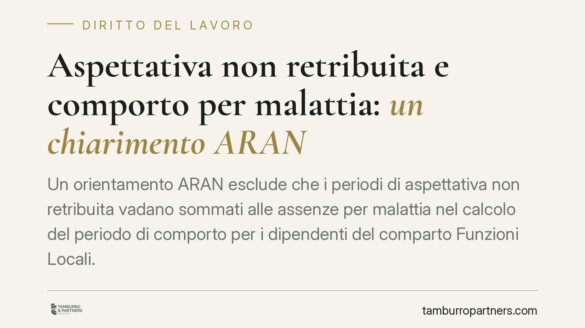

Aspettativa non retribuita e comporto per malattia: un chiarimento ARAN
Un orientamento ARAN esclude che i periodi di aspettativa non retribuita vadano sommati alle assenze per malattia nel calcolo del periodo di comporto per i dipendenti del comparto Funzioni Locali. Si tratta di una distinzione tecnica di rilievo: un errore nel conteggio può tradursi in un licenziamento illegittimo e in un contenzioso dagli esiti costosi per l'amministrazione.

Il punto di partenza
Il periodo di comporto è l'arco temporale entro il quale il lavoratore assente per malattia conserva il diritto alla conservazione del posto. Superata questa soglia, il datore di lavoro può procedere al licenziamento (o, nel pubblico impiego, alla risoluzione del rapporto) senza che l'assenza rilevi come inadempimento.
La domanda operativa è semplice: quando un dipendente ha fruito di aspettativa non retribuita, quei giorni vanno computati nel comporto insieme alle assenze per malattia? Secondo l'orientamento espresso dall'ARAN, la risposta è negativa.
Nota di tracciabilità. L'orientamento è riconducibile a un parere ARAN sul comparto Funzioni Locali in materia di comporto e aspettativa. Gli estremi puntuali (codice/data) vanno verificati sulla banca dati ufficiale dei pareri ARAN prima di qualsiasi utilizzo in sede di provvedimento o difesa: il dato va trattato, allo stato, come da riscontrare.
Inquadramento normativo
La disciplina è contenuta nel CCNL del comparto Funzioni Locali sottoscritto il 21 maggio 2018. Due istituti vanno tenuti distinti:
- le assenze per malattia e il relativo periodo di comporto, disciplinate dal Capo del CCNL dedicato alle assenze per malattia;
- l'aspettativa non retribuita per motivi personali o di famiglia, regolata dalle disposizioni del medesimo contratto sui congedi e le aspettative.
Trattandosi di istituti con presupposti, finalità e disciplina autonomi, il periodo di aspettativa non si somma a quello di malattia. La prima è una sospensione volontaria del rapporto su iniziativa del dipendente; la seconda è un'assenza determinata da uno stato morboso, indipendente dalla volontà.
Avvertenza di metodo. Il riferimento ai singoli articoli del CCNL va sempre confrontato con la versione vigente del contratto e con le eventuali intese di comparto successive, che possono averne modificato numerazione o contenuto.
Il valore dei pareri ARAN
I pareri ARAN non hanno efficacia vincolante: costituiscono un'interpretazione autorevole della contrattazione collettiva, ma non precludono una diversa lettura in sede giudiziale. Vanno quindi usati come orientamento, non come fonte normativa.
Sul punto soccorre la giurisprudenza di legittimità. La Cassazione ha chiarito che nel computo del comporto rilevano le sole assenze qualificabili come malattia, con esclusione delle sospensioni del rapporto riconducibili a scelte del lavoratore o a istituti diversi. Il principio generale è quello della stretta corrispondenza tra causa dell'assenza e natura del periodo computato: non tutto ciò che sospende la prestazione confluisce automaticamente nel comporto.
Perché conta
Un conteggio che indebitamente sommi aspettativa e malattia anticipa il superamento del comporto e può condurre a un recesso privo di presupposto. Il rischio concreto è l'illegittimità del provvedimento, con riammissione in servizio e risarcimento.
Va segnalata una zona grigia: i casi di interferenza tra i due istituti. Se la malattia insorge durante l'aspettativa, o a ridosso del suo termine, occorre stabilire quale istituto prevalga e da quale momento decorrano gli effetti. In alcune ipotesi la malattia può sospendere o interrompere l'aspettativa in corso; in altre resta assorbita. La qualificazione va fatta caso per caso, sulla base della documentazione e della sequenza temporale effettiva.
Cosa fare in concreto
Per il dipendente:
- Richiedi e conserva il prospetto analitico delle assenze utilizzato dall'amministrazione per il calcolo del comporto.
- Verifica che i giorni di aspettativa non retribuita non risultino sommati a quelli di malattia.
- In caso di preavviso di superamento del comporto, chiedi per iscritto il dettaglio del conteggio prima di ogni determinazione.
Per l'amministrazione:
- Separa in modo documentale le assenze per malattia dai periodi di aspettativa non retribuita nel calcolo del comporto.
- Disciplina le ipotesi di sovrapposizione (malattia insorta durante l'aspettativa) con una procedura interna chiara.
- Riscontra gli estremi dei pareri ARAN sulla banca dati ufficiale prima di fondarvi un provvedimento.
In sintesi
Aspettativa non retribuita e malattia restano istituti distinti: i relativi periodi non si cumulano nel comporto. Il principio è coerente con la giurisprudenza di legittimità, ma la sua applicazione richiede attenzione nelle ipotesi di interferenza e un riscontro puntuale delle fonti. Consigliamo, in ogni caso dubbio, di formalizzare per iscritto la richiesta del conteggio prima di assumere o impugnare decisioni.
---
Contributo informativo a cura di Tamburro & Partners - Avv. Giuseppe Tamburro. Non costituisce parere legale.
Ogni storia di lavoro ha i suoi tempi.
Se gestisci HR e vuoi un confronto su contenzioso, ispezioni o licenziamenti, scrivi allo studio. Ti rispondiamo entro un giorno lavorativo.